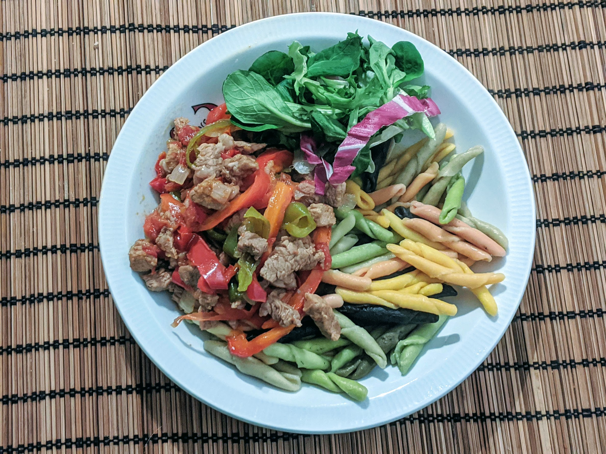

Axoa de veau

Pour 5-6 personnes :
- 1kg d'épaule de veau
- Une bonne poignée de petits piments verts doux, ou bien deux poivrons verts
- Deux poivrons rouges
- Deux tomates mûres
- 4-5 gousses d'ail
- 4-5 oignons frais, ou 3 échalotes
- Une grosse cuillère à café de piment d'espelette
- 60cL de bouillon, idéalement de veau
- Un bouquet garni
- Sel, poivre, huile d'olive
- Préchauffer le four à 170°C. Couper la viande en petits morceaux. La faire revenir au fond d'une cocotte allant au four pendant une petite dizaine de minutes, pour que ça rende son jus et que ça dore un peu.
- Pendant ce temps, éplucher et émincer les oignons. Réserver la viande à part, puis faire revenir les oignons dans la cocotte dans le jus de viande.
- Pendant ce temps, laver et couper les poivrons et piments en lamelles, les rajouter dans la cocotte, éplucher et écraser l'ail, et le rajouter dans la cocotte. Ajouter le bouquet garni et laisser le tout revenir un peu à feu moyen-vif.
- Laver et éplucher les tomates en dés, les rajouter avec la viande. Saler, poivrer, ajouter le piment d'espelette puis le bouillon. Mélanger et enfourner le tout pendant 1h30, en vérifiant le niveau de liquide toutes les demi-heures (et en rajoutant un peu de bouillon si nécessaire).
- Servir chaud avec des petites pâtes, des patates vapeur ou du riz.